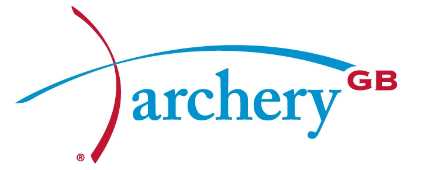
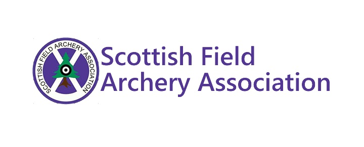

What's New
Follow us on Facebook to hear our latest news
Or follow us on our other social media
Napier Archery is primarily a social club for any students interested in the sport of archery. Whether you've never laid eyes on a bow and arrow, or you've spent years shooting competitively, you'll find it a fun and welcoming environment to people of all abilities. As well as the social aspects of the sport as a way of making new friends, we also welcome anyone wishing to get involved with archery competitively.
During the academic year the club regularly competes in events and competitions at a university level in the Scottish Student Sport Archery league and British University and Colleges Championships, as well as local and national events in target and field archery all year round. Napier Archery has enjoyed a strong history of success in all competition formats and categories.
Napier Archery is an active member of several UK based archery organisations.
 Follow us on Facebook to hear our latest news
Or follow us on our other social media
As part of ENSA - Edinburgh Napier Students Association, anyone who wants to join may do so online through the ENSA portal. You will need to create an account on the ENSA site to process your membership. Once you've joined, we'll take care of all the rest.
If you have any problems joining, or if you have any additional questions, just send us a message and we'll try to sort things out.
Napier Archery shoots at a number of different venues across Edinburgh city. This includes outdoor training during the Scottish summer and indoor shooting throughout the long Edinburgh winter.
As well as training, we also take part in competitions throughout Scotland and abroad, and we hold several social events during the year.
The best way to keep track of us and stay up to date with all of our training sessions, upcoming competitions, and events is to follow our club calendar.
Our training sessions are held at the following locations:
North Merchiston Club
48 Watson Crescent
EH11 1EP
Archers Hall
66 Buccleuch Street
EH8 9LR
Craiglockhart Campus Graduation Field
219 Colinton Road
EH14 1DJ
If you want to know more, just send us a message on Facebook or send us an email and we will get back to you as soon as possible!